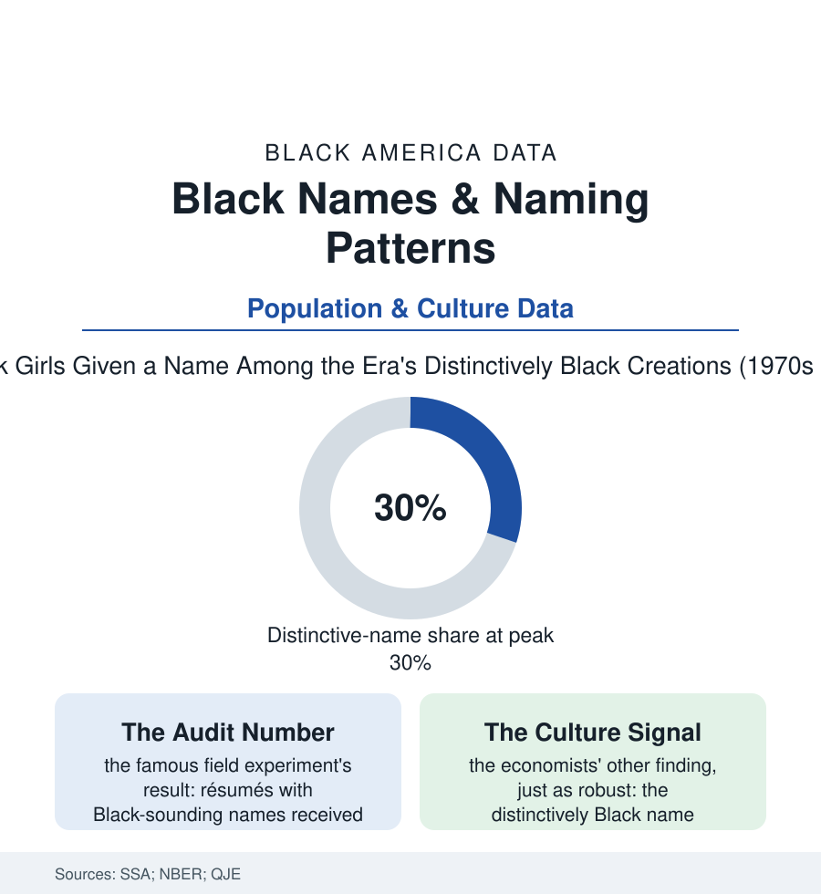

Black Census
The Name File: What Black America's Names Measure
A name is the first data point — and the research has used Black naming patterns to measure cultural autonomy, and the world's reaction to them to measure everything else. The name file.

Before the census counts a child, a name does: the first self-declaration a family files with the world. Black America's names are among the most studied strings in the social sciences — parsed by economists as a cultural index, by auditors as a discrimination detector, and by the Social Security Administration's great name database as a century of demographic weather. This article reads the name file: what the names measure about the culture that coined them, and what the reactions to them measure about everyone else.
The Great Divergence
The name data's master fact is a divergence with a date on it: through the first two-thirds of the twentieth century, Black and white naming overlapped heavily (the biblical and classical shelf shared across the color line — the Marys and Jameses of both populations in the SSA's tables), and then, in the late 1960s and 1970s, the Black name stock broke away in the data's most dramatic cultural event: the coined names (the La- and -isha and De- constructions of the linguists' morphology studies), the African and Arabic names of the era's consciousness (the Kwames and Imans entering the tables), the aspirational and invented forms that the researchers formalized as the distinctively Black name — its share of Black births climbing to a peak in the seventies in the Fryer-Levitt analyses before settling into a high plateau as the culture's own mainstream. The surnames file tells the older story underneath: the census surname data still showing the freedom-era choices (the Freeman and Washington surnames' Black majorities in the distributions — the names taken, not inherited, preserved in the data as emancipation's signatures), alongside the planter names borne by the descendants of both the enslavers and the enslaved, the genealogy file's permanent ambiguity. Naming, in both directions, is the population writing its own header on the state's form: the divergence of the seventies read by the scholars as exactly what it announced — a cultural autonomy declaration, filed at the hospital, in triplicate. Beneath the legal record runs the second register no database holds: the called name — the nickname the neighborhood assigns and the obituary will print beside the legal one, the two-name system the community's documents have carried since the homegoing programs began refusing to choose.
The Name as Instrument
Social science then weaponized the divergence into its most famous measuring instrument: the audit study — the economists' 2004 field experiment sending identical résumés differing only in the names at the top, the Black-signaling names drawing roughly half the callbacks of the white-signaling ones, a result replicated in the housing, lending, and correspondence audits of the following decades until 'the name at the top of the résumé' became shorthand for the entire literature of taste-based gatekeeping. The same researchers' second finding deserves the file's equal emphasis, because the culture's own anxiety often omits it: the name itself carried no independent penalty in the outcome data once family background was accounted — the distinctively named child's life chances tracked her circumstances, not her syllables; the penalty lived entirely in other people's reading of the name, which is to say in the audit studies' inboxes, not in the name. The naming system's modern chapters write themselves in the SSA's annual releases: the invented-name tradition professionalized into the era's signature style (the unique-name share rising across all populations in the recent data — Black America's invention become the nation's fashion, the suburban name-stock's coinages the divergence's final victory), the celebrity and scripture cycles visible in the Black tables with a year's lag or a year's lead, and the quiet return of the heritage names (the African names' steady climb, the grandparents' names revived in the vintage cycle the SSA data show cycling through every population). The state records the names without comment, a hundred thousand small declarations a year.
Reading the Name Data
The name is the one datum in this atlas its subject's family chose freely, in joy, before any institution weighed in — which is why its files are so revealing in both directions: the names themselves charting a people's cultural self-government, the callback studies charting the toll exacted for exercising it in view. The SSA publishes the counts. The meaning was filed at the hospital, and it was never the state's to grade.
More in Black Census
The Black Population of the United States: Size, Definitions, and Distribution
The Black population of the United States totals 52.8 million — 15.4 percent of the nation. How the Census Bureau defines and counts the population, and where it lives.
Black Median Household Income in the United States
Black median household income stands at $56,490 in the Census Bureau's annual income report — how the figure is measured, how it compares, and what drives it.
The Black Poverty Rate: Levels, Children, and the Long Trend
The official Black poverty rate is 17.1 percent — against 11.1 percent nationally and 7.7 percent for non-Hispanic White Americans. How poverty is measured and what the data show.
Source: Social Security Administration baby name data; National Bureau of Economic Research studies (Fryer & Levitt); Quarterly Journal of Economics audit research; U.S. Census Bureau surname data.